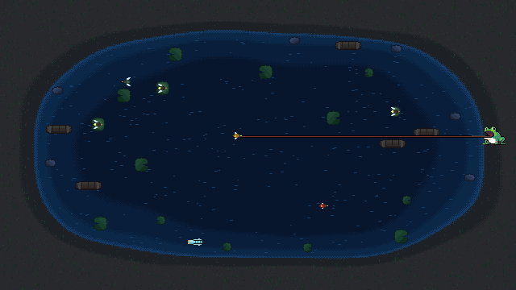

Baixar
Sempre a última versão publicada, e todo pacote já vem com o launcher.
-
Seu sistema
Windows
Instalador
.exe· 64 bitsInstala sem pedir administrador. O executável não é assinado: na primeira vez clique em Mais informações e depois em Executar assim mesmo.
Baixar instaladorSe o Windows recusar o instalador, baixe a versão em pasta: ela não instala nada, é só extrair e abrir
Baixar em ZIPfrog-pond.exe. -
Seu sistema
Linux
AppImage · qualquer distribuição
Um arquivo só, não instala nada. Dê permissão de execução com
Baixar AppImagechmod +xe clique duas vezes. -
Debian e Ubuntu
Pacote
.deb· amd64Instale com
Baixar .debsudo dpkg -iou abra o arquivo na loja de aplicativos. Entra no menu como qualquer outro programa.
Não há versão para macOS. O jogo roda offline e guarda o progresso na sua máquina; quem usa a internet é o launcher, só para procurar versão nova.
O que é
Frog Pond é um arcade de cima, em pixel art. A rã não nada: ela anda pela margem, desliza pela parede em que está e dobra a quina quando chega ao fim dela. A água fica inteira na sua frente e a única ferramenta é a língua. Você mira com o mouse, clica, e a presa volta grudada nela.
-
A margem inteira
A rã percorre a beira do lago e vira as quinas sozinha quando você insiste na direção. Ela nunca sai da margem, então o que decide o que dá para tirar da água é o alcance da língua e o lugar onde você resolveu esperar.
-
Seis bichos no ar
Mosca comum, vaga-lume, vermelha (quatro delas devolvem uma vida), dourada, besouro pesado e libélula. Cada um voa de um jeito, dá um trabalho diferente e vale mais que o anterior.
-
Seis chefes
A cada dez níveis a partida é só a luta: mosquito, morcego, aranha, peixe, garça e a rã rival. Cada um tem a sua janela de abertura, e achar essa janela é a luta.
-
Níveis sem teto
Um nível é um número e uma semente. A semente é sorteada uma vez e fica guardada, então repetir o nível devolve o mesmo lago, a mesma parede e o mesmo enxame, e o melhor tempo vale a pena caçar. A escada de dificuldade não acaba.
-
Rank e build
Cada bicho vale o nível do tabuleiro em que apareceu. O rank entrega pontos e você gasta um a um, para sempre, em agilidade, força ou língua. Duas rãs no mesmo rank não jogam parecido, e dá para devolver todos os pontos e montar a build de novo.
-
Dia e noite
Metade dos tabuleiros roda depois do anoitecer. É o mesmo lago sob um filtro azul, com a mesma margem no mesmo lugar, e no escuro o vaga-lume parado numa vitória-régia é quase a única coisa que se enxerga.

Vem com launcher
O que você instala não é só o jogo.
Junto vai um launcher. Toda vez que ele abre, confere se saiu versão nova, baixa o que falta, troca os arquivos e só então começa a partida. Você instala uma vez e não precisa voltar aqui para atualizar.
- Procura atualização a cada abertura.
- Troca a versão sozinho, sem reinstalar nada.
- Vale para os três pacotes: instalador do Windows, AppImage e
.deb.